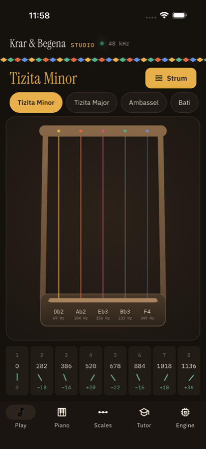
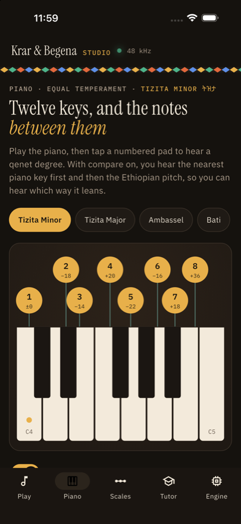

A begena, a krar and a piano you can play in the browser, tuned to the four Ethiopian qenet. Every note is a physically modelled string: a Karplus-Strong engine written in Rust, with no samples anywhere in the project.
Runs in your browser · sound starts on your first tap · best with headphones
Five colour-coded strings. Touch one to pluck it, drag across to strum, ten fingers at once. A live oscilloscope shows the real output.
A keyboard with each qenet degree laid over it. Compare mode plays the nearest piano key, then the Ethiopian pitch.
All four qenet against equal temperament, showing which way and how far each degree leans. Every scale plays.
A six-string krar tab with a moving playhead, tempo and loop. Tap along and your timing is scored against the beat.
The threads, the delay line and the damping, drawn as they actually run on the platform you are using.
Teal ticks are the twelve piano keys. Each dot is a scale degree where it truly falls, and the bar shows the distance between the two. That distance is the whole point: 282 sits 18 cents below D♯, 678 sits 22 below G.
The Rust crate is compiled with wasm-bindgen and played through an AudioWorklet in 128-frame blocks, 2.67 ms each at 48 kHz. An AnalyserNode feeds the on-screen scope.
The same crate builds to KrarEngine.xcframework and renders straight into CoreAudio on its own real-time thread, driven from Dart over dart:ffi. The audio thread never waits on the UI.


Rust and wasm-pack for the engine, Flutter for the app. The whole web build is three commands:
npm run build:engine # Rust -> WebAssembly
npm run build:web # Flutter web, with the engine copied in
npm run serve # http://localhost:8080For iPhone, npm run build:ios compiles the engine into an xcframework and builds the app. Full instructions, the architecture and the known issues are in the README.